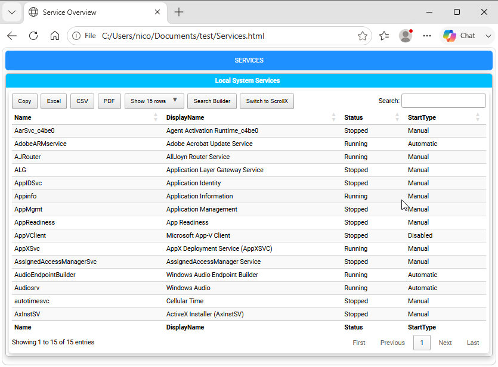
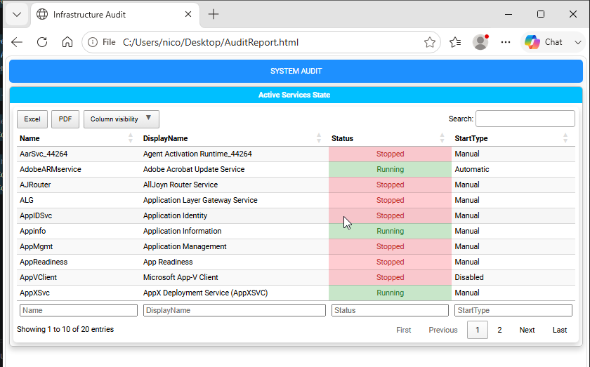

Chapter 4: Working with DataTables and Data Grids
DataTables Overview
The core strength of PSWriteHTML lies in its integration with DataTables. Instead of rendering static, unstyled HTML tables, the New-HTMLTable cmdlet converts standard PowerShell objects into fully interactive data grids complete with real-time searching, sorting, pagination, column visibility toggles, and direct data export options (PDF, Excel, CSV, Copy).
This chapter explains how to configure tables, apply conditional cell formatting, customize column properties, and optimize data grid performance.
Basic Table Generation (New-HTMLTable)
To create a table, use the
New-HTMLTable cmdlet, passing a collection of
PowerShell objects to the -DataTable parameter within a script block.
Here is a simple example of generating a table from the output of Get-Service:
$Services = Get-Service | Select-Object Name, DisplayName, Status, StartType | Select-Object -First 15
New-HTML -Title "Service Overview" -FilePath "Services.html" -Show {
New-HTMLTab -Name "Services" {
New-HTMLSection -HeaderText "Local System Services" {
New-HTMLPanel {
New-HTMLTable -DataTable $Services
}
}
}
}
It produces a simple interactive table, as shown below:

Fig. 8 A first interactive DataTable with sorting, searching, and paging controls.
Sorting
You can control the initial sort order of a table by specifying the -DefaultSortColumn and -DefaultSortOrder parameters
on New-HTMLTable. For example:
New-HTMLTable -DataTable $Services -DefaultSortColumn 'Name' -DefaultSortOrder 'Ascending'
Column Formatting & Customization (New-TableContent and New-TableHeader)
To customize individual columns, use nested
New-TableContent and
New-TableHeader script blocks.
Use New-TableContent for cell formatting and New-TableHeader for displayed header names and header styling.
New-HTMLTable -DataTable $Services {
New-TableContent -ColumnName 'Status' -Alignment center
New-TableHeader -Names 'StartType' -Title 'Startup Type'
}
New-TableContent Parameters
-ColumnName: Exact property name from the incoming PowerShell object.
-Alignment: Text alignment:
left,center, orright.
New-TableHeader Parameters
-Names: Column name or names whose table headers should be customized.
-Title: Custom display title for the selected table header.
-Alignment: Text alignment:
left,center, orright.
Conditional Formatting & Cell Highlighting (New-TableCondition)
Visual indicators are crucial for system health reports. PSWriteHTML allows conditional styling based on exact string values, numbers, or comparison operators using New-TableCondition.
Coloring Cells Based on Status
The following example highlights services based on whether they are running or stopped:
New-HTMLTable -DataTable $Services {
# Highlight "Running" status in light green
New-TableCondition -Name 'Status' -ComparisonType string -Operator eq -Value 'Running' -BackgroundColor '#d4edda' -Color '#155724'
# Highlight "Stopped" status in light red with bold text
New-TableCondition -Name 'Status' -ComparisonType string -Operator eq -Value 'Stopped' -BackgroundColor '#f8d7da' -Color '#721c24' -FontWeight bold
}
Comparison Operators
In addition to exact string matching, comparison logic supports numeric thresholds:
-Operator ‘eq’ (Equal)
-Operator ‘ne’ (Not Equal)
-Operator ‘gt’ / -Operator ‘ge’ (Greater Than / Greater Than or Equal)
-Operator ‘lt’ / -Operator ‘le’ (Less Than / Less Than or Equal)
-Operator ‘contains’ (Substring match)
Numeric Range Example
$Disks = Get-CimInstance Win32_LogicalDisk | Select-Object DeviceID, @{N='FreeSpaceGB'; E={[math]::Round($_.FreeSpace/1GB, 2)}}
New-HTMLTable -DataTable $Disks {
# Highlight drives with less than 15 GB free space in warning red
New-TableCondition -Name 'FreeSpaceGB' -ComparisonType number -Operator lt -Value 15 -BackgroundColor '#ff4d4d' -Color '#ffffff'
}
Complete Example: Interactive Disk & Service Dashboard
Here is a full, ready-to-run script combining pagination, export buttons, column formatting, and conditional color highlighting:
# 1. Prepare Data
$Services = Get-Service | Select-Object Name, DisplayName, Status, StartType | Select-Object -First 20
# 2. Build Document
New-HTML -Title "Infrastructure Audit" -FilePath "$env:USERPROFILE\Desktop\AuditReport.html" -Show {
New-HTMLTab -Name "System Audit" {
New-HTMLSection -HeaderText "Active Services State" {
New-HTMLPanel {
New-HTMLTable -DataTable $Services -Buttons 'excelHtml5', 'pdfHtml5', 'columnVisibility' -PagingLength 10 {
# Center header and adjust title
New-TableContent -ColumnName 'Status' -Alignment center
# Formatting Rules
New-TableCondition -Name 'Status' -ComparisonType string -Operator eq -Value 'Running' -BackgroundColor '#C8E6C9' -Color '#2E7D32'
New-TableCondition -Name 'Status' -ComparisonType string -Operator eq -Value 'Stopped' -BackgroundColor '#FFCDD2' -Color '#C62828'
}
}
}
}
}
It produces a complete colored interactive table, as shown below:

Fig. 9 A complete DataTable combining export buttons, sorting, and conditional formatting.
Combining table conditions and controls results in clean, executive-ready documentation.
Performance Tips for Large Datasets
When outputting tables containing tens of thousands of rows (such as Active Directory event logs or large file system scans), consider these optimization guidelines:
Limit Selected Properties: Pre-filter objects with
Select-Objectin PowerShell before passing them to-DataTable.Disable Unnecessary Search Controls: Do not use the
-Filteringswitch parameter if it’s not needed, as this reduces browser processing overhead on massive DOM trees.Use Default Page Lengths: Keep
-PageLengthat 25 or 50 so the browser only renders visible rows into memory.
Next Chapter: Chapter 5: Visualizing Data with Charts and Graphs